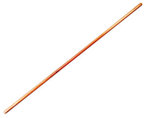
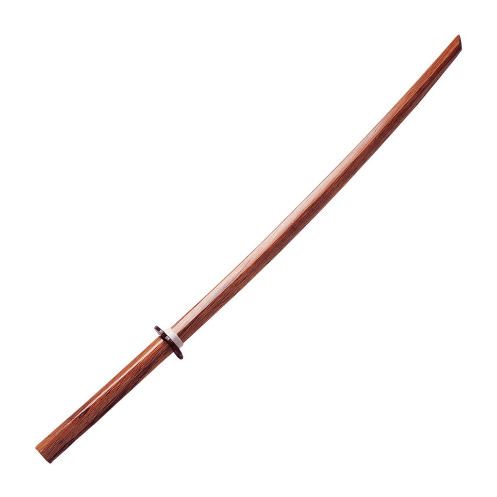
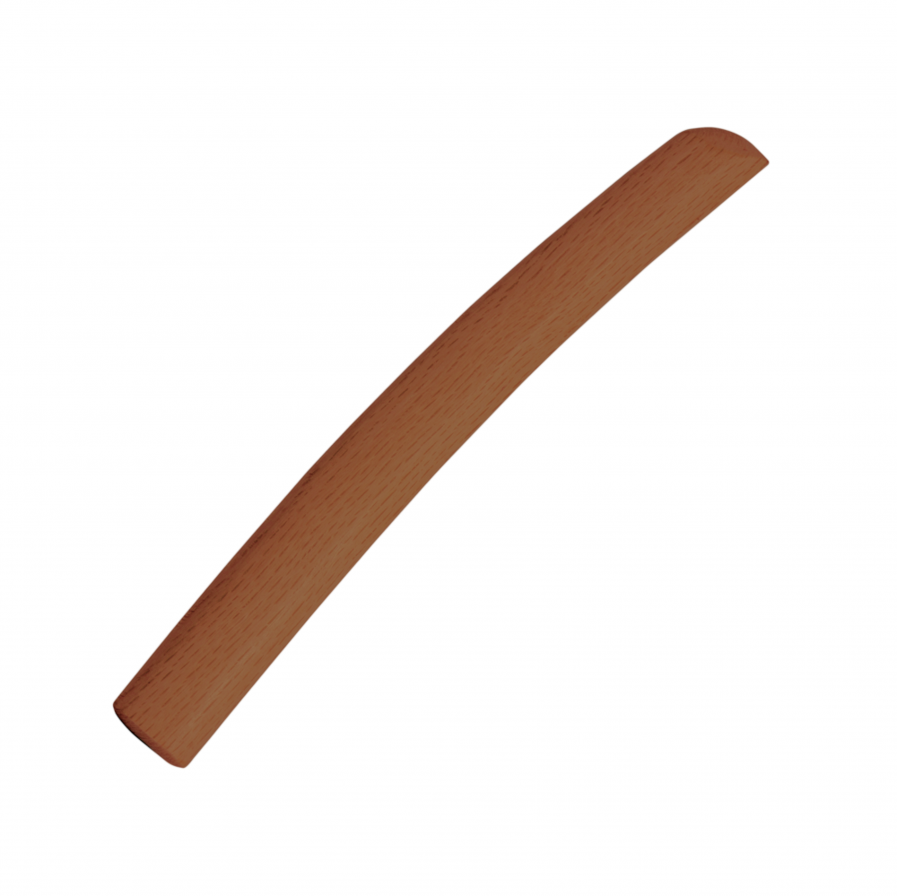

Techniky se zbraněmi se v reálném životě nejspíš nikdo nevyužije, avšak učí nás základy pohybu a zlepšují naše techniky bez nich. Aikido využívá tří zbraní:
Jo je zjednodušeně hůl. S touto zbraní se začíná cvičit jako první, je totiž nejsnadnější. Používáme většinou techniky obrany proti holi nebo za pomoci hole. To znamená, že hůl drží jeden z dvojice partnerů. Těmto technikám se říká jodori. Cvičíme také tzv. kumijo, tj. hůl proti holi nebo hůl proti meči. Cvičíme kromě suburi, neboli procvičování základních seků a bodů, katy s jo senseů, samostatně či ve dvojicích. Délka jo není striktně daná, ale nejčastěji se používá 128 cm dlouhá s průměrem asi 2,5 cm (různých dřev).
Bokken je dřevěný meč obvykle velikosti katany používaný pro cvičení jak v aikido tak i například v iaido, kendo, kenjutsu nebo jodo. Bokkeny se vyrábějí převážně z dubového dřeva a existuje mnoho druhů a variant a vyrábí se se záštitou (tsuba) i bez ní. V dojo cvičíme suburi, kumitači (katy iči no tači až go no tači a ki musubi no tači), tačidori a základní techniky s bokkenem (ikyo omote a ura, kote gaeši, irimi nage, šiho nage) a mnohé další. Tyto techniky mají stejný základ, jako při technikách bez bokkenu.
Tanto byl nůž samuraje, který nosil stále s sebou. Při samurajských soubojích se nejednou stalo, že byl použit právě tento nůž při zasažení útočníka, a tak vznikly různé formy obrany proti tanto. My používáme se používá tupý dřevěný nůž a cvičí se převážně obrana proti ozbrojenému útočníkovi a skupině útočníků, což je teda pouze pro pokročilé. Techniky používané proti útoku nožem jsou např. kote gaeši, gokyo, šiho nage, sankyo, irimi nage, genkei kokyu nage, což jsou stejné techniky jako prováděné bez něj.
